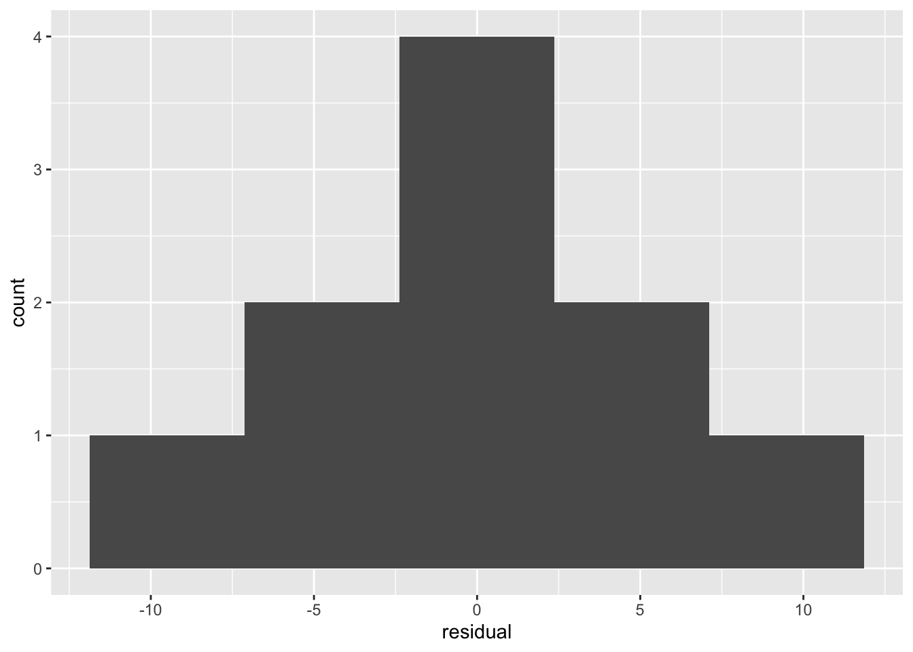

A rate is defined as the number of events divided by some denominator that measures the at-risk experience giving rise to those events. In epidemiology, it is often expressed as number of events per person time.
Note this is different from a “risk”, because a risk can be viewed as a probability bounded by 0 and 1, whereas a rate is not bounded by 1.
We can use poisson regression to model those rates as a function of predictor variables.
Specifically, we model a Poisson distributed variable (integer 0, 1, 2, 3, …) (https://en.wikipedia.org/wiki/Poisson_distribution), and we include the denominator of the rate as an “offset.”
Technically, we model the logarithm of the rate as a linear function of predictor variables.
As described in video 9.9 below, the model takes the following functional form:
ln(rate)=ln(y/t) = b0+b1*x1+b2*x2 +…
where
y is the number of events (or a count),
t is follow-up time (the rate’s denominator),
b0 is the intercept,
b1 is the coefficient for variable x1,
b2 is the cofficient forindependent variable x2,
and additional variables and coefficients can be added.
Then, because of the properties of logarithms, we can rewrite the log(rate) as:
ln(y/t)=ln(y)-ln(t)
So the full model can be expressed as
ln(rate)=ln(y/t) =ln(y)-ln(t)= b0+b1*x1+b2*x2
Now we can move ln(t) over to the other side
ln(y)-ln(t)= b0+b1*x1+b2*x2
ln(y)= b0+b1*x1+b2*x2 +ln(t)
This ln(t) is what is known as the “offset” when fitting the Poisson model for rate data in software.
I recommend this series of YouTube videos by MarinStatsLectures-R Programming, which discuss theory and application of the Poisson model
9.9 Poisson Regression: The Model For Rate Data (what is an offset?) https://www.youtube.com/watch?v=5pZbER_mR4k&list=RDCMUCaNIxVagLhqupvUiDK01Mgg&index=4
9.10 Poisson Regression in R: Fitting a Model To Rate Data (with offset) in R https://www.youtube.com/watch?v=QP4F98ysrEA
9.11 Poisson Regression: Model Assumptions https://www.youtube.com/watch?v=r492fF9XZl8&t=2s
The videos use the British doctor’s data, a famous study on lung cancer and smoking: https://en.wikipedia.org/wiki/British_Doctors_StudyLoad British Doctor’s Data
To download British doctor’s data, we can use this package: https://rdrr.io/cran/ACSWR/man/bs1.html
install.packages("ACSWR") #This installs the package containing the datalibrary(ACSWR) #This loads the package containing the data
data(bs1) #This brings data into the working environment.
bs1 #Take a look at the data.## Age_Group Age_Cat Age_Square Smoker_Cat Smoke_Ind Smoke_Age Deaths
## 1 35-44 1 1 YES 1 1 32
## 2 45-54 2 4 YES 1 2 104
## 3 55-64 3 9 YES 1 3 206
## 4 65-74 4 16 YES 1 4 186
## 5 75-84 5 25 YES 1 5 102
## 6 35-44 1 1 NO 0 0 2
## 7 45-54 2 4 NO 0 0 12
## 8 55-64 3 9 NO 0 0 28
## 9 65-74 4 16 NO 0 0 28
## 10 75-84 5 25 NO 0 0 31
## Person_Years Deaths_Per_Lakh_Years
## 1 52407 61.06055
## 2 43248 240.47355
## 3 28612 719.97763
## 4 12663 1468.84624
## 5 5317 1918.37502
## 6 18790 10.64396
## 7 10673 112.43324
## 8 5710 490.36778
## 9 2585 1083.17215
## 10 1462 2120.38304I like to work in the tidyverse, so let’s make it a tibble (a data frame with some nice formatting).
Please see here for an intro to data wrangling in the tidyverse: https://michaeldgarber.github.io/teach-r/dplyr-1-nyt-covid.html
library(tidyverse)## ── Attaching core tidyverse packages ──────────────────────── tidyverse 2.0.0 ──
## ✔ dplyr 1.1.2 ✔ readr 2.1.4
## ✔ forcats 1.0.0 ✔ stringr 1.5.0
## ✔ ggplot2 3.4.1 ✔ tibble 3.2.1
## ✔ lubridate 1.9.2 ✔ tidyr 1.3.0
## ✔ purrr 1.0.1
## ── Conflicts ────────────────────────────────────────── tidyverse_conflicts() ──
## ✖ dplyr::filter() masks stats::filter()
## ✖ dplyr::lag() masks stats::lag()
## ℹ Use the ]8;;http://conflicted.r-lib.org/conflicted package]8;; to force all conflicts to become errorsbs1_tibble=bs1 %>% as_tibble()
bs1_tibble## # A tibble: 10 × 9
## Age_Group Age_Cat Age_Square Smoker_Cat Smoke_Ind Smoke_Age Deaths
## <fct> <int> <int> <fct> <int> <int> <int>
## 1 35-44 1 1 YES 1 1 32
## 2 45-54 2 4 YES 1 2 104
## 3 55-64 3 9 YES 1 3 206
## 4 65-74 4 16 YES 1 4 186
## 5 75-84 5 25 YES 1 5 102
## 6 35-44 1 1 NO 0 0 2
## 7 45-54 2 4 NO 0 0 12
## 8 55-64 3 9 NO 0 0 28
## 9 65-74 4 16 NO 0 0 28
## 10 75-84 5 25 NO 0 0 31
## # ℹ 2 more variables: Person_Years <int>, Deaths_Per_Lakh_Years <dbl>In looking at the data, we can see that the variable Deaths in this dataset is the Poisson (count) variable.
And the denominator for the rate is Person_Years.
So the rate is rate=(Deaths/Person_Years)
Following video 9.10 above, let’s model the rate as a function of smoking (yes/no) and the age category.
We use the glm() function to fit this model.
#Use names() to get variable names to make sure we type them correctly in the model.
names(bs1_tibble)## [1] "Age_Group" "Age_Cat" "Age_Square"
## [4] "Smoker_Cat" "Smoke_Ind" "Smoke_Age"
## [7] "Deaths" "Person_Years" "Deaths_Per_Lakh_Years"pois_model = glm(
formula= Deaths~ # #the outcome variable is Deaths, a count variable
Smoke_Ind+Age_Group+ #the two predictor variables
#here is where we specify the offset, i.e., the denominator of the rate
offset(log(Person_Years)),
#Poisson family for Poisson regression. Note lowercase. R is case-sensitive.
family="poisson",
data=bs1_tibble #the data in which the model is fit
)
#Note this can all be done on fewer lines, as long as arguments are separated by commas.
#I put on multiple lines so I could annotate each.
pois_model = glm(
formula= Deaths~ Smoke_Ind+Age_Group+ offset(log(Person_Years)),
family="poisson", data=bs1_tibble
)Check out the model results by printing the object corresponding to the model.
pois_model##
## Call: glm(formula = Deaths ~ Smoke_Ind + Age_Group + offset(log(Person_Years)),
## family = "poisson", data = bs1_tibble)
##
## Coefficients:
## (Intercept) Smoke_Ind Age_Group45-54 Age_Group55-64 Age_Group65-74
## -7.9193 0.3545 1.4840 2.6275 3.3505
## Age_Group75-84
## 3.7001
##
## Degrees of Freedom: 9 Total (i.e. Null); 4 Residual
## Null Deviance: 935.1
## Residual Deviance: 12.13 AIC: 79.2The rate ratio corresponding to each predictor can be found by exponentiating the coefficient. The coefficients can be accessed by the syntax model_object$coefficients
pois_model_coefficients=pois_model$coefficients
rate_ratios=exp(pois_model_coefficients)
rate_ratios## (Intercept) Smoke_Ind Age_Group45-54 Age_Group55-64 Age_Group65-74
## 3.636474e-04 1.425519e+00 4.410584e+00 1.383920e+01 2.851678e+01
## Age_Group75-84
## 4.045121e+01So adjusting for age category, smokers have a 1.4-times higher rate of lung cancer death.
We can use this model to predict expected values based on values of age category, smoking, and the number of person-years.
We use the predict.glm() to do this. Each argument is described in this documentation: https://www.rdocumentation.org/packages/stats/versions/3.6.2/topics/predict.glm
Below, we specify the following arguments: object, newdata, and type .
The object is the object corresponding to the model that we fit.
newdata is the dataset in which the values will be predicted. This can be any dataset as long as it has the variables included in the model.
If we say, type="response", the resulting predicted value will be on the scale of the response variable.
predicted_values=predict.glm(
pois_model,#the model,
#We can use any dataset in "newdata" as long as it has the variables included in the model.
#Here, we're simply going to use the original data in which the model was fit.
#We can then compare the true values in the dataset with the model's predicted values for that observation.
newdata = bs1_tibble,
type="response"
) %>%
as_tibble()#Convert the result to a tibble for easier data wranglingWe can see here that we have just one column of data. These are the expected values corresponding to each row in the original dataset.
predicted_values## # A tibble: 10 × 1
## value
## <dbl>
## 1 27.2
## 2 98.9
## 3 205.
## 4 187.
## 5 111.
## 6 6.83
## 7 17.1
## 8 28.7
## 9 26.8
## 10 21.5We can append these predicted values to the original dataset using the dplyr function bind_cols(). I’m creating a new tibble called bs1_tibble_w_pred_values which begins with bs1_tibble and then gets predicted_values appended to it.
bs1_tibble_w_pred_values=bs1_tibble %>%
bind_cols(predicted_values) %>%
#The predicted values are called "value". Let's change that to
#Deaths_expected
rename(Deaths_expected=value) %>%
#We could calculate a residual
#Residual=actual value - predicted value
mutate(residual=Deaths-Deaths_expected)Check out the data including the predicted values:
bs1_tibble_w_pred_values## # A tibble: 10 × 11
## Age_Group Age_Cat Age_Square Smoker_Cat Smoke_Ind Smoke_Age Deaths
## <fct> <int> <int> <fct> <int> <int> <int>
## 1 35-44 1 1 YES 1 1 32
## 2 45-54 2 4 YES 1 2 104
## 3 55-64 3 9 YES 1 3 206
## 4 65-74 4 16 YES 1 4 186
## 5 75-84 5 25 YES 1 5 102
## 6 35-44 1 1 NO 0 0 2
## 7 45-54 2 4 NO 0 0 12
## 8 55-64 3 9 NO 0 0 28
## 9 65-74 4 16 NO 0 0 28
## 10 75-84 5 25 NO 0 0 31
## # ℹ 4 more variables: Person_Years <int>, Deaths_Per_Lakh_Years <dbl>,
## # Deaths_expected <dbl>, residual <dbl>Now let’s do some checks.
We can examine the actual number of deaths and the expected number based on the model to see how well the model performed. Here I’m using dplyr::select() to just select the two deaths variables and then will print them in the console so we can compare the two.
bs1_tibble_w_pred_values %>%
dplyr::select(Deaths,Deaths_expected)## # A tibble: 10 × 2
## Deaths Deaths_expected
## <int> <dbl>
## 1 32 27.2
## 2 104 98.9
## 3 206 205.
## 4 186 187.
## 5 102 111.
## 6 2 6.83
## 7 12 17.1
## 8 28 28.7
## 9 28 26.8
## 10 31 21.5How are the residuals distributed?
bs1_tibble_w_pred_values %>%
ggplot()+
geom_histogram(
aes(residual),#the variable to be visualized with the histogram
bins = 5#customize the histogram's bin width
)
Copyright © 2022 Michael D. Garber